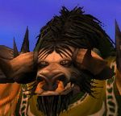

Bardek
Age : 35
Sexe : Homme
Race : Tauren
Faction : Horde
Formation : Chasseur
Description : Après des années de vagabondage en compagnie de son loup Till, Bardek a enfin trouvé sa place au sein des Frères de la Plaine. Son histoire est longue, très longue jusqu'ici... Il ne tient qu'à lui de vous la raconter un jour, au détour d'une choppe, d'un feu, mais sans doute pas dans un quelconque bouquin. Du moins, pour le moment.
Pourtant, Bardek en aurait, des choses à raconter. Orphelin à l'age de l'insouciance, il fut recueillit par les maitres chasseurs de Thunder, et élevé dans ses traditions qui, selon ses bienfaiteurs, étaient celle de sa propre famille.
Bardek devint donc chasseur sans trop en avoir le choix. Mais sa formation lui convenait completement, et il développa très tôt des capacités très impressionnantes qui ne laissèrent pas indifférentes une jeune chasseuse du nom de Jeyla. Très vite, ils tombèrent amoureux. Mais de par leur jeune age, ça ne semblait pas convenir à leurs maitres respectifs.
Jeyla tomba enceinte. Bardek était plus heureux qu'il n'aurait pu l'être, et malgré l'insouciance de la jeunesse, entreprit rapidement de se marier avec Jeyla. Mais les maitres ne l'entendaient pas de cette oreille : Ils voulaient avant tout que les jeunes tourtereaux fassent leurs preuves en tant que grands chasseurs.
Jeyla avait accepté, pour montrer sa détermination et malgré son état de grossesse, toutes les missions qu'on lui avait confié. Elle était l'égale des mâles, son courage semblait sans limite. Mais elle ne sut jamais qu'un jour, elle et Bardek en avaient accepté une de trop.
Surveiller la migration des Kodos. Une tâche somme toute assez tranquille lorsqu'on est à l'abris d'une tour, non loin de La Croisée. Jeyla et Bardek, l'air songeur, révaient à l'approche de l'accouchement. Là, les maitres abdiqueraient forcément, les laisseraient se marier. Seulement, ce jour là, rien ne se passa comme prévu.
Pour une raison inconnue, un troupeau de kodos se mit à galoper, comme fous furieux, en direction de la tour de garde. Ils étaient rapide, très rapide, trop rapide : Bardek n'eut pas le temps de prendre une décision, pas le temps de penser à autre chose quà ce quil allait innévitablement se passer, à savoir un violent choc entre les kodos et la tour de garde. Ne pensant qu'a une seule chose, il se rua sur Jeyla pour la proteger. Mais trop tard.
La violence de l'impact fut telle que les premiers kodos de la chargent firent s'effondrer la tour. Bardek et Jeyla furent projeter chacun d'un coté de l'édifice de bois qui s'écroula comme un chateau de cartes, alors que les kodos qui poursuivaient la marche se mirent à piétiner sauvagement les débris et les taurens qui s'y trouvaient...
Bardek ne se souvint pas du reste lorsqu'il se reveilla à La Croisée, avec à son chevet un prêtre Mort-Vivant et deux des maitres chasseurs. Il chercha désespérément Jeyla autour de lui. Elle n'était nulle part. Son regard embué de larmes fixa alors les deux maitres. Pas besoin de mots quand le regard suffit. Jeyla n'était plus. Et le bébé aussi.
Bardek ne fut plus le même après ça. Sans tenter d'en savoir plus - savoir Jeyla morte lui suffisait amplement comme information -il quitta ses maitres de Thunder Bluff, et, sans réel autre but que celui de porter sa croix, il se mit à errer, dans Mulgore et Durotar, accompagné seulement de son fidèle Till, il serait à jamais orphelin.
Mais tout cela, Bardek ne vous le racontera sans doute jamais. Parce que le passé recelle des mystères que seul le futur peut révèler, et parce que son futur s'inscrit désormais dans celui des Frères de la Plaine.
Plus d'infos sur Bardek >>>